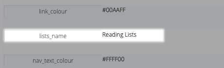

Your Blog
The "blog"1 is the outward face of your library and is sometimes the main way you engage your library patrons. You can use it to direct catalogue searches, internet searches, relate topical catalogue and/or internet resources and just simply engage with patrons.
As the landing page for web searches, most on-line searchers can be directed by your content.
Fortunately, it is quite easy to add content. With little effort, you can keep that content dynamic (changing) to maintain engagement.
You can use the "styles" to change appearance, as well as add special content.
Blog page structure
The Blog is a web page with a number of components that you define.
Each component is numbered in this structure view:
-
Banner - this can be a graphic or a background colour. The height of the banner is defined in the style, as is the colour (or gradient). An image can be stored on the blog web server or can be linked to any image visible on the internet.
-
Banner Text - text that overlays the banner. For example, it could be your organisation name.
-
Navigation bar - the home link (linking back to the page you are viewing), a quick search box, a detail search link, an optional custom "lists" menu and optionally a log-in button.2
-
Optional Categories - these filter the blog page, showing only blog posts linked to that category. In the graphic above, clicking "Junior" would show only blog posts with the category "Junior". Clicking the "Home" link will show any blog entries tagged as "Home" (note that this is case sensitive and must have a capital H) – if you have no posts tagged as "Home", Athenaeum will show all of the blog posts.
-
Big Message - you can add a message to be displayed above the blog posts and below the navigation bar. The size, colour, background can be styled independently of other parts of the page.
-
Blog posts - each post is displayed in the number of columns you specify. Note: the top row is not affected by this setting.
-
Big footer - a message to be displayed below the blog posts and above the copyright line. The size, colour, background can be styled independently of other parts of the page.
-
Top_row - a row of posts above the columns of the rest of the posts. Use these to pin a few posts to the top.
Defining Content
The type of content is best described by adding content and describing as we go.
From the Navigation menu, choose "blog" or use the single key shortcut "g".
You can also configure your main menu to include a "blog" button, which is a good option if you are changing your web content regularly (which we recommend to engage your library patrons).
Entries with grey text and a strikethrough are tagged as not visible on the web. Click the visible check box to make them visible.
An empty blog entry
Click the +New button at the top to add an empty entry.
Working from left to right, top to bottom are:
-
sort position all new entries are unnumbered, as it is presumed you will most likely want to put new entries at the top. change the number and the entry will appear in the appropriate place (new for June 2020, items marked as "top row" will show first in numerical order and then the rest of the entries in numerical order)
-
heading this is the subject or heading for the blog entry, usually a couple of words however it can be longer if you so desire. be aware that if you have long words and many columns, individual words may not fit well on small display devices
-
the visible check box check (tick) this to make your entry visible on the web, uncheck it to hide it from the web site. by default, this is not checked
-
top row check box (new for June 2020) a check box to mark entries to show in the top row above the columns. this is optional and it is recommended that you limit the number of top row entries to 3 or fewer.
-
categories if you have defined categories, a set of check boxes will be displayed allowing you to assign zero or more categories to a blog post
-
link to web or item if you want your blog entry to do something when clicked, you enter the link here. The types of links are described below
-
content text that either describes the content of the blog link (e.g. this resource will tell you all you need to know about XYZ), or maybe just the entire entry itself (e.g "Library is closed tomorrow" or maybe brief library rules). note that paragraphs are ignored
-
image here you can load a picture that is shown above the text content you entered after the subject. images should be either jpeg or png files that aren't too big (large images will take a while to download). for fun, you can also insert animated gifs - however be aware that these can get irritating after a little while
-
delete button which does what you might think it does
-
youtube link you can embed youtube clips using the code that youtube can give you - described in more detail below. *note that if you have both a youtube link and an internet link, then unexpected behaviour may occur when the user clicks on the youtube clip **
Blog entries as Links
When you specify a link, then clicking the text blog entry or the image of the blog entry (but not the title) will attempt to respond to that link.
The types of links you can add are listed below.
External links (links that are not subject searches, title search or carousels) will attempt to open in a new tab on the user's device.
YouTube link
Hopefully, this is self evident as to purpose. Athenaeum will store the YouTube ID you enter into the YouTube link field and then show the preview frame on the Athenaeum web page. Clicking that frame will play the youtube video within the preview or you can use the YouTube controls to switch to full screen. See below for finding the code.
Subject search
Use this to create simple guided searches.
Entering the label "subject=" (leave out the quote marks) followed by your subject terms will create a link that will search Athenaeum for the specified subject terms. note: the word "subject" is case sensitive - you must use lower case text as it appears here
This is similar to manually entering the search term into the subject field on the detail search widget on the web templates. A subject search searches the following fields:
- subjects
- subjects_copyright
- keywords
Bar code search
Entering the label "barcode=" (leave out the quote marks) into the link field, followed by a bar code will create a link that searches the catalogue for the specified bar code and shows the result. note: the word "barcode" is case sensitive - you must use lower case text as it appears here with no spaces
Title search by ID
Every title in the catalogue has a unique internal ID used by Athenaeum. Entering the label "idtitle=" (leave out the quote marks) into the link field, followed by the internal ID of the title will perform a search for the title.
However, an easier way to add a link to a title is to find a "copy" or a "title" in the catalogue and click the "send to blog" button at the top of the screen. This will create a new blog entry, numbered 15 (that is, near the top) with a title of "Highlighted", idtitle=XXXX (whatever XXXX is for that title) and add the title of the item with the author detail into the description and if there is an image associated with that item, it will be copied to the blog entry.
Carousels
"Title" carousels show a specific selection of titles. note: when selecting items for carousels, ensure they have a cover image, otherwise a generic book icon is shown
You can create a title carousel from the TITLE list or the COPY list.
The basic technique is:
- find the copies or the titles you wish to highlight
- ensure these have title cover images associated with them
- choose Utility from the top of the list view
- click the Miscellaneous tab if it is not visible
- click "Blog Carousel these Titles"
Note that you are limited to 24 titles in a carousel, though we recommend you limit the number to no more than 12 for performance reasons,
An entry in the blog is created automatically. You can edit that entry, changing the heading and the body text, which are prefilled with place holders for you. The body text is simply a list of the selected title names.
The link field will be added with the format "title_images=aaa,bbb,ccc,..." which are the direct links to those titles...don't change that.
If the button has a strike-through line that means you have more than 24 titles or copies highlighted - so reduce your found set.
The carousel is in the order that the titles or copies were viewed in the list view.
Title List
This is similar to the Title Carousel, except that clicking the blog entry will cause Athenaeum to perform search for the listed IDs and then present that list in the standard search results view.
One way to think of this is that it is a curated search.
Links
Anything entered into the link field that is not any of the above will be turned into an anchor link (valid or not).
Links should be properly qualified html links, such as https://www.pinterest.nz/page3487/dvd/ and not have any additional punctuation. The part before the :// is the protocol, such as http, https or even fmp (such as when creating a link to a filemaker database) and is required.
Athenaeum does not display a thumbnail of the link, so you should add an image or at least a suitable heading and words that will become the clickable link.
Navbar
This is a special blog post entry that does not appear in the normal view of blog posts, but instead becomes a menu item in a custom menu in the navbar.
In the Heading, enter the name of the menu item.
In the link field, enter "navbar=" (all lowercase, no spaces).
Then, in the content field enter the function of the link. You may only enter:
- subject= (followed by the subject search)
- list= (followed by the IDs of the titles in the list)
- idtitle= (followed by the ID of the title to be shown)
- barcode= (followed by the bar code of the item to be shown)
- popular= (must not be followed by anything or any spaces)
- a fully qualified URL (that is, something that starts with http:// or https:// and then followed by the link to the desired page)
The name of the custom menu is defined in the "lists_name" row in styles:

For example, defining two navbar entries, "Fantasy titles" and "Classics Reading for July" might look something like this:
Choosing the first item in the menu would perform a search for "fantasy". Choosing the second would bring up the list of July titles for Classics.
Blog Categories
Categories are an optional feature of the blog. If you do not define any categories, the category filters will not appear in the navigation bar.
You can categorise your blog entries according to your own rules.
First, you should create some categories.
Open the Categories view
Click the categories button at the top of the blog view:
Define some categories
Click the New button to add categories.
We suggest you limit yourself to three or four categories
Give each category a number indicating where in the sort order you want the categories to appear and a name for the category.
As of the April 2020 build of the web search and blog
templates, you have the ability to add an explicit
category named "Home" which allows you to change the
behaviour of the blog home page. If you add this
category, then the home page will either only show
posts tagged as "Home" (as you might expect) or it
will revert to the previous behaviour of showing ALL
posts in the blog.
The order in the list is not important. The sort order is used by the web page, which draws the categories from left to right in the order as defined by your numbering.
Categorise your blog posts
Return to the blog page and you will see the category check boxes are displayed for each post.
Select the categories as you see fit. Each blog post does not have to have a category and it may have more than one category.
Note that the order of the category check boxes is unimportant. They will always be shown in alphabetical order inside Athenaeum. However, the order on the web page is defined by your sort numbers in the category list.
Hiding and changing categories
You can change the categories for blog posts at any time.
You can also add or remove categories in the category list at any time.
Be aware that if you change the name of a category in the category list, that does NOT update any previous categorisation you have entered.
For example, assume you change the category from "intermediate" to "middle".
If you had previously categorised any blog posts as "intermediate", that value will still be there but will be ignored by the web site.
In this case, Athenaeum will highlight any posts in red and show all values store in the category field:
To fix this, simply select the red text to the right and delete it. Then click the new categories that you want.
This effect will occur whenever the category field does not match the list of categories.
-
"blog" is a term that appeared in 1999 and is a contraction of "web log" (that is, I'm posting my daily log to the web) and refers to a website that contains online personal reflections, comments, and often hyperlinks, videos, and photographs provided by the writer to their audience. ↩
-
the popular link that used to be in the navbar is now deprecated and replaced by the optional custom lists menu. If necessary, it can be re-instated with a "navbar=" or a custom "widget=" blog post. ↩